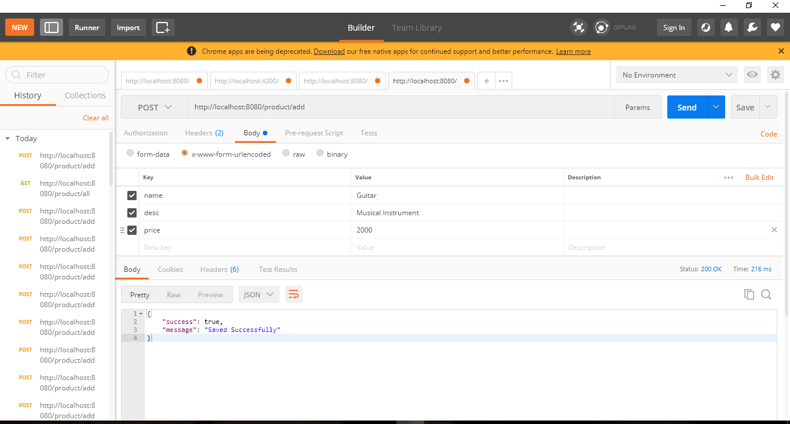

Installations
APIs are very important concept in programming since it allows us to work across different platforms. Download and install nodejs
You can check if you already have it installed using the command node -v
Create a folder for the project (named rest-api). Run in the folder directory
This will set up the configurations for node. The most important is to set the entry point as index.js. Create the file index.js
Install Express by running
Install body-parser which will translate the request from the client by running
After installing. Edit index.js
To ensure that changes are automatically reflected, we'll use a tool called nodemon
To start the app, run
Head over to the browser and enter the url localhost:8080/
MongoDB
The database that works seamlessly with the MEAN Stack is the MongoDB. Download Community Version of Mongodb from here
We can also use a UI tool called Robomongo to work with the database. Download here
To run the database. Using the terminal, navigate to the folder where it is installed. for windows, the path is something like C:/Program Files/MongoDB/Server/3.4/bin. Run
Add Mongoose.js Module as ORM for MongoDB. Install mongoose by running in the terminal
Ensure that the database server is running. Modify index.js to connect to it.
You should see the success message in the console. Obviously, the database name will be product as seen above.
Product Model
It's good programming principle that we separate our model into a different file. Create a new folder called models. In the folder, create a new file, name it product.js in the root directory. Add the contents below to the file
As seen above, we defined the attributes of the Product model. For the updated_at attribute, we are using a javascript function to assign it a timestamp. Finally, we exported the model.
Routes for the REST API endpoint
What we need to do next is to create the routes for our API. We'll create a route to create, read, update and delete a product.
Create a folder routes. Create a file product.js in the routes folder. Let us start by adding a route that will add a new product to the database.
routes/product.js
What we have above is quite basic. Remember, we are using Mongoose. This gives a clean way of interacting with the database. We create an instance of the model class. Next, we use if statments to ensure that users send the needed parameters. Notice that we are also sending back a json object. If all parameters are provided, we save the product.
To use this route, modify the index.js to reflect the changes below
All request to the product route will need to be prefixed with product. We can now test our API by using a Chrome extension called Postman.
Install Postman if you don't have it. Launch Postman. Ensure that the mongodb instance is running. Choose request type as Post. Enter the url: http://localhost:8080/product/all
Click on the body tab and select x-www-form-urlencoded.
Enter a key value pair for the name, desc and price. Hit send, you should get a success message.

How cool is that! We'll complete the app in the next part.